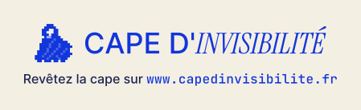
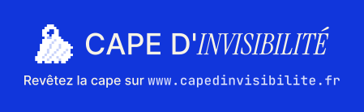

Documentation · En bêta gratuite
Tout savoir
sur la cape.
Comment l'application masque vos fichiers, ce qu'elle garde et ce qu'elle retire, et ce qui a changé à chaque version. Pour l'installer, suivez d'abord le guide d'installation.
Comprendre
Le principe
L'application remplace les noms et les numéros de vos fichiers par des codes, avant que vous ne les confiiez à une IA. Elle les remet ensuite à leur place dans la réponse.
- Tout se passe sur votre poste. L'application s'ouvre dans votre navigateur, mais rien n'est envoyé sur Internet : ni vos fichiers, ni la table, ni statistiques d'usage.
- Une table de correspondance garde le lien entre chaque vraie valeur et son code. C'est elle qui permet de rétablir les vraies valeurs. Elle reste chez vous et ne part jamais vers l'IA.
- Une référence de 6 caractères (par exemple
3f9a1c) identifie chaque table. Elle figure dans le nom de chaque fichier pseudonymisé avec elle : vous savez toujours quelle table utiliser.
Avant l'envoi
Pseudonymiser vos fichiers
Déposez un ou plusieurs fichiers dans la partie « Pseudonymiser » : votre navigateur télécharge une archive ZIP avec les fichiers pseudonymisés et leur table.
- Formats acceptés : Word (
.docx), Excel (.xlsx) et FEC (.txt). Vous pouvez mélanger les formats dans un même envoi. - Mise en forme conservée : le fichier pseudonymisé garde le format, la structure et la mise en forme de l'original. Les montants et les dates ne sont pas modifiés.
- Noms des fichiers :
rapport.cloak-3f9a1c.docxpour Word et Excel. Pour un FEC, le SIREN du nom est lui aussi masqué. L'archive porte le nom du fichier, oucape-3f9a1c.zippour plusieurs fichiers. - Figer les valeurs (Excel) : chaque formule est remplacée par son résultat. L'IA lit les totaux sans recalculer le classeur, mais le fichier rétabli n'a plus de formules.
- Retirer les images (Word) : captures, scans et signatures sont remplacés par « [image retirée] ». Elles ne reviennent pas au rétablissement.
À conserver
La table de correspondance
Sans la table, personne ne peut retrouver les vraies valeurs, vous compris. Gardez-la avec soin.
La table est un classeur Excel en clair, table-3f9a1c.xlsx. Vous pouvez l'ouvrir pour contrôler ce qui a été masqué. Toute personne qui l'obtient lit les vraies valeurs : gardez-la sur votre poste.
La table est chiffrée, table-3f9a1c.map. Elle ne s'ouvre qu'avec son mot de passe. Notez-le en lieu sûr : sans lui, la table est illisible et personne ne peut la récupérer.
- Compléter une table : déposez-la dans la zone « Table existante » avant vos nouveaux fichiers. Une même valeur garde le même code dans tous les fichiers, anciens et nouveaux.
- La nouvelle version remplace l'ancienne : une table complétée garde sa référence et couvre tous les fichiers. Conservez-la à la place de la précédente.
- Plusieurs FEC : une même table peut couvrir les FEC de plusieurs sociétés ou de plusieurs exercices. Chaque société reçoit son propre SIREN fictif.
Avec l'IA
Travailler avec l'IA
L'IA reçoit des fichiers où les noms et les numéros sont remplacés par des codes. Elle peut les analyser, les comparer et les combiner comme d'habitude.
- Relisez avant d'envoyer : ouvrez le fichier pseudonymisé et vérifiez ce qui part. C'est vous qui validez.
- Combinez vos fichiers : avec une même table, une valeur porte le même code partout. L'IA peut rapprocher un FEC, un classeur et un rapport.
- Gardez les codes tels quels : demandez à l'IA de reprendre les codes sans les modifier, pour qu'ils soient reconnus au rétablissement.
- Enregistrez la réponse dans un fichier
.docx,.xlsx,.txt,.csvou.md, pour la rétablir ensuite.
Après l'IA
Rétablir les vraies valeurs
Déposez dans la partie « Rétablir » le fichier pseudonymisé ou la réponse de l'IA, avec sa table : vous téléchargez le fichier avec les vraies valeurs.
- La bonne table : celle dont la référence figure dans le nom du fichier. Un fichier qui porte la référence d'une autre table est refusé.
- Un FEC non modifié retrouve son nom et son contenu d'origine, à l'identique.
- Ailleurs, la graphie peut changer : une valeur écrite de plusieurs façons (« DUPONT », « Dupont ») reprend sa graphie la plus fréquente.
- Ce qui ne revient pas : les métadonnées effacées (l'auteur du document), les images retirées et les formules figées.
Bon à savoir
Ce qui est masqué
L'application masque les noms et les numéros qui identifient une personne ou une société. Elle ne voit pas tout : relisez toujours le fichier avant l'envoi.
- Noms de personnes et de sociétés.
- SIREN, numéros de TVA, IBAN, cartes bancaires et téléphones, même écrits avec des espaces ou des tirets.
- Comptes nominatifs et colonnes non standard d'un FEC.
- Graphiques, objets intégrés et nom du fichier dans Word et Excel.
- Les montants et les dates.
- Les mots courants du vocabulaire comptable, même quand ils servent de nom propre (« PETIT », « BLANC »).
- Le texte visible dans une image (capture, scan, signature) : cochez « Retirer les images » si besoin.
Bon à savoir
Mise à jour régulière
Le moteur de pseudonymisation s'améliore à chaque version. Pour que vos fichiers profitent des derniers correctifs, une version pseudonymise pendant 30 jours après sa publication.
- Au-delà de 30 jours, la partie « Pseudonymiser » est désactivée et la page vous invite à télécharger la dernière version.
- Vos tables restent valables et « Rétablir » fonctionne toujours : vous ne perdez jamais l'accès à vos vraies valeurs.
- Aucun appel réseau : seule la date de votre poste compte. Le pied de la page indique le nombre de jours avant la prochaine mise à jour.
- Pour mettre à jour, reprenez les étapes 2 et 3 du guide d'installation.
Goodies
Les stickers
Collé sur un ordinateur ou au bord d'un écran, un sticker rappelle à chacun de protéger ses données avant de les confier à l'IA. Deux versions, crème ou bleu, à imprimer vous-même.


- Téléchargez la planche A4 : 5 stickers crème et 5 stickers bleus, de 9 cm de large.
- Imprimez-la sur une feuille autocollante A4, à 100 % (taille réelle), sans « ajuster à la page ».
- Découpez aux ciseaux ou au cutter le long du trait rose : il guide la découpe.


À venir
La roadmap
Ce qui arrive dans les prochaines versions. Les dates sont des objectifs, pas des engagements.
- Les fichiers PDF : pseudonymiser un PDF (facture, relevé, contrat…) avant de le confier à l'IA, puis rétablir les vraies valeurs dans la réponse, toujours sur votre poste.
- Un installateur classique : l'application s'installe comme n'importe quel logiciel, sur PC et sur Mac, sans Python à installer ni fenêtre de terminal.
Journal des mises à jour
Ce qui a changé
- Le mot « statut » (et « statuts ») reste désormais lisible : l'IA comprend mieux vos documents juridiques.
- Une nouvelle page, le lexique conservé, liste tous les mots qui restent lisibles ; un mot ajouté récemment y affiche sa date au survol.
- Vos tables des versions précédentes se rétablissent toujours.
- Une version de plus de 30 jours le signale plus clairement : toute la partie « Pseudonymiser » est grisée, avec un lien vers la dernière version.
- « Rétablir » fonctionne toujours, quelle que soit l'ancienneté de la version.
- Vos tables des versions précédentes se rétablissent toujours.
- Mise à jour d'entretien du moteur de pseudonymisation.
- Les mots courants du vocabulaire comptable restent lisibles, même quand ils servent de nom propre (« PETIT », « BLANC ») : relisez le fichier avant l'envoi.
- Vos tables des versions précédentes se rétablissent toujours.
- Plus de numéros reconnus et masqués : SIREN, TVA, IBAN, téléphones ou cartes bancaires écrits avec des espaces ou des tirets.
- Word et Excel mieux protégés : graphiques, objets intégrés, tableaux croisés dynamiques et nom du fichier sont aussi traités.
- Deux options : « Figer les valeurs » (Excel) et « Retirer les images » (Word).
- Vos tables de la version 0.3.0 se rétablissent toujours. Un fichier traité de nouveau peut recevoir d'autres codes.
Mise à jour · 11 novembre 2026
Version 0.3.0
- Des noms de fichiers plus courts, sans date ni heure :
rapport.cloak-3f9a1c.docx. Une table complétée garde son nom. - Une référence de table à 6 caractères, pour ne plus confondre deux tables.
- Vos fichiers et tables de la version 0.2.0 se rétablissent toujours.
- La cape apparaît dans l'onglet du navigateur et au lancement.
Mise à jour · 11 novembre 2026
Version 0.2.0
- La table est un classeur Excel que vous pouvez relire. Elle n'est chiffrée que si vous choisissez un mot de passe.
- Plusieurs fichiers avec la même table, en une fois ou plus tard : une même valeur garde le même code.
- Plusieurs FEC dans une même table, chacun rétabli à l'identique.
- Un fichier déposé avec la mauvaise table est refusé.
Première version · 9 novembre 2026
Version 0.1.0
- Pseudonymiser un fichier Word, Excel ou FEC, puis rétablir les vraies valeurs, sur PC et sur Mac.
- Tout se passe sur votre poste : rien n'est envoyé sur Internet.
- Mot de passe de la table facultatif.